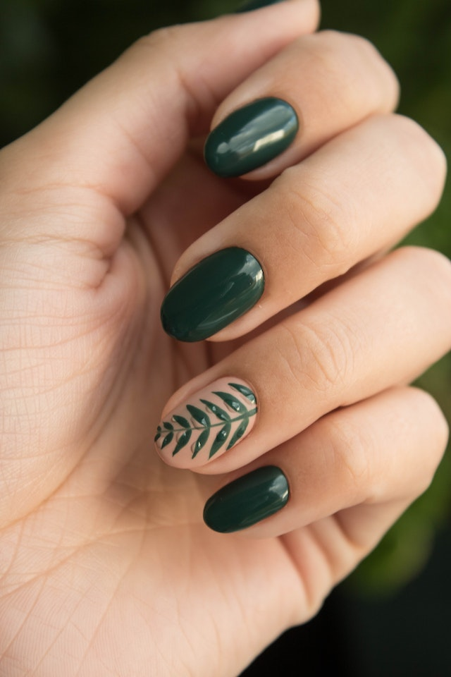
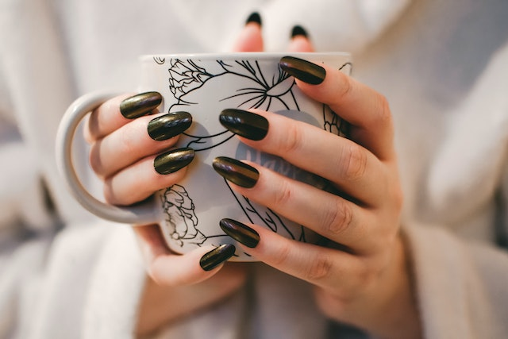

SERVICIOS
Uñas esculpidas
extensiones artificiales de las uñas realizadas con geles de construcción, utilizando moldes para dar la forma y extensión deseada.
Manicura
tratamiento de belleza cosmético para las uñas y manos
Pedicura

La mejor definición de pedicura es: tratamiento cosmético superficial de las uñas de los pies. Este tratamiento, no trata exclusivamente de las uñas de los pies, sino el cuidado integral de los pies. El término pedicura viene del latín y significa cuidado de los pies
Esmalte permanente

Este tipo de producto requiere de un secado con luz UV para fijar el producto y conseguir una mayor dureza. Se aplica sobre nuestra uña natural y se trabaja la forma y extensión según el gusto de la cliente y luego se esmalta con el color deseado.